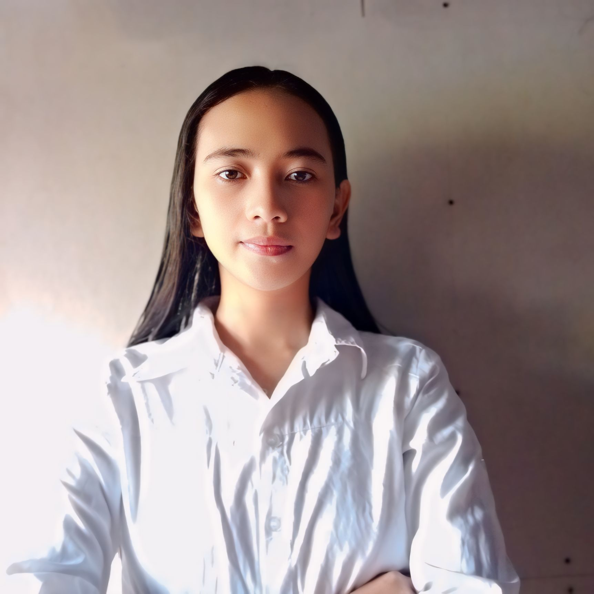

Home
Hello, my name is Angeline Doinog. This is my personal portfolio website where you can learn more about my journey, skills, and career aspirations.
About
Hi, I'm Angeline a student currently pursuing a degree in Information Technology at NWSSU. Although I don't have formal work experience yet, I have a strong passion for technology and a continuous drive to learn and grow in the IT field.
I grew up in brgy.Monbon sta.margarita samar, where my interest in technology began when I got my first coding project and started exploring how it worked.
My studies at NWSSU have provided me with a solid foundation in various IT disciplines, including programming,networking,database management. I enjoy learning new technologies and applying them to solve real-world problems.
My career objective is to work in an innovative environment where I can leverage my IT skills and collaborate with a team to create impactful solutions.
Education
Here is my educational background.
-
Primary: Brgy. Napuro Sta. Margarita, Samar
Graduated: 2014-2015 -
Secondary: Clarencio Calagos Memorial School of Fisheries
Graduated: 2021-2022 -
Current: Northwest Samar State University
Year: Second year college
Skills
Here are some of my skills.
- Designer
- Dancing
- Playing badminton
Hobbies
Here are some of my hobbies.
- Dancing
- Playing Badminton
- Designing
Photo
Contact
You can contact me via email, phone, or Facebook.
- Phone: 09817768088
- Email: angelinedoinog2002@gmail.com
- Social Media: Angeline Casaljay Doinog Facebook